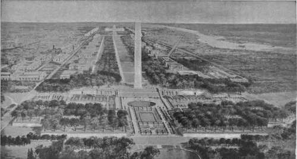

Privilege Of The Floor
Description
This section is from the book "The National Capitol. Its Architecture Art And History", by George C. Hazelton, Jr. Also available from Amazon: The National Capitol Its Architecture Art and History.
Privilege Of The Floor
The privilege of the floor of the Senate is an honor, of late years, rarely conferred by that august tribunal. The President of the United States seems never to have exercised his right to appear upon the floor of the Senate during a regular session, save twice before the government moved to Washington, on August 22d and 24th, 1789, and on the occasion when President John Adams read his Message in 1800. On December 7, 1833, a resolution was adopted formally recognizing the existence of the privilege in the Members of the House and their Clerk, Heads of Departments, several officers of the Treasury, the Postmaster-General, the President's secretary, federal judges, foreign Ministers and their secretaries, persons who had received the thanks of Congress by name, commissioners of the Navy Board, Governors of States or Territories, persons who had been Heads of Departments or members of either branch of the Legislature, and, at the discretion of the President of the Senate, members of the legislatures of foreign governments in amity with the United States. The rule was amended from time to time so as to include several officials of the army and navy, together with the Clerk and reporter of the Supreme Court; and in 1838, certain reporters of newspapers were given the privilege. It was evidently abused, however; for in 1853 the rules were again more stringent, requiring each person, except in a few cases, to register his name before going upon the floor. When the Senate was about to move into its new chamber in 1858, the privilege was cut down to officers of the Senate and Members of the House. It was, however, soon extended so as to embrace various federal officials; and in 1872, the private secretaries of the Senators also were admitted. Contestants for seats have uniformly been admitted until the settlement of their titles, but no other persons are allowed in the chamber except it be parties in contempt or persons appearing as counsel in cases of contempt or impeachment.
PLAN OF THE CITY OF WASHINGTON PROPOSED BY PARK COMMISSION.
Since 1803, the privilege of the floor has been repeatedly sought on behalf of the ladies; and in several instances, it has been granted for one day only, notably in 1850, during the debate on the Compromise Measures, and again in 1858, when the admission of Kansas was under consideration.
On a few occasions, the Senate has honored distinguished visitors and citizens with the privilege of the floor. December 9, 1824, at one o'clock, Lafayette, in accordance with a prearranged plan, was conducted into the chamber by a committee appointed for that purpose, and introduced by Mr. Barbour, its chairman, to the Senate. The Senators arose from their seats and remained standing until the French general was seated in a chair to the right of the Vice-President, to which he was invited by that presiding officer. Then, upon the motion of Mr. Barbour, the Senate adjourned by unanimous consent that the Senators individually might present their respects to their honored visitor. The ex-President of the Republic of Texas was admitted to the floor of the Senate by unanimous consent February 17, 1842; and the Rev. Theobald Matthew once received a like honor, through the efforts of Mr. Clay, who argued in favor of the resolution in opposition to Senators Calhoun, Dawson and Foote.
January 5, 1852, at one o'clock, Kossuth was conducted into the chamber of the Senate by a committee appointed for that purpose, it having been reported by the committee and agreed to by the Senate that the same ceremonies should be held in his honor as had been held in honor of Lafayette. Mr. Shields, as chairman of the committee, presented the visitor to the Senate. The Senators having arisen, the President pro tempore addressed him as follows: " Ixmis Kossuth, I welcome you to the Senate of the United States. The committee will conduct you to the seat which I have caused to be prepared for you." The Senators then resumed their seats, after which, upon the motion of Mr. Magrum, the body adjourned to speak in person with the distinguished Hungarian.
January 9, 1855, the officers and soldiers of the war of 1812, then holding a convention in Washington, received the unprecedented honor of an invitation to occupy seats upon the floor of the Senate without the bar during the meeting of their convention in the city. February 6, i860, the ex-President of the Republic of Bolivia was admitted to the floor of the Senate. January 13, 1865, upon the announcement by Mr. Grimes of the presence in the Senate Chamber of Vice-Admiral Farragut, the first officer in the navy upon whom that title had been conferred, the Senate by unanimous consent took a recess of ten minutes to exchange courtesies with their visitor. April 20, 1870, the privilege of the floor for that day only was extended to the officers and members of the Legislature of the State of Ohio, then on a visit to the national capital.
As a mark of respect and honor, on January 8, 1879, George Bancroft was tendered the privilege of the floor, which he continued to enjoy during the remainder of his life. Though the resolution, reported by Mr. Blaine, spoke of him as " the ex-Cabinet Minister, whose appointment was earliest in the line of those now living," there is no doubt that his great worth as an historian was as instrumental in securing this honor as his administration of the portfolio of the Navy and his diplomatic service abroad. Winfleld S. Hancock, by a resolution unanimously consented to March 5, 1881, was accorded by the Senate the privilege of the floor during his stay in Washington.
The House has never been so strict in this matter as the Senate. Even small children of Members have been often accorded the privilege—not by resolution but by courtesy—the difficulty of keeping them off the floor having been found greater than the annoyance of their presence.
Continue to: